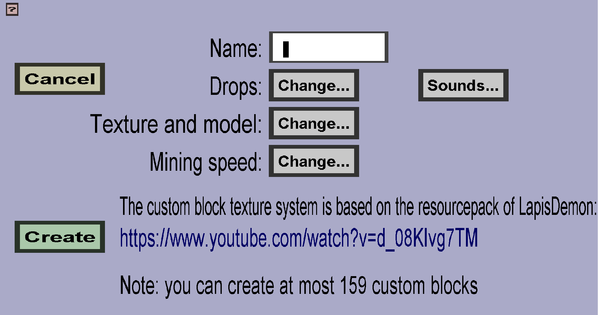

The block edit menu can be used to create or modify custom blocks. If
you just started creating a new block, it should look like this:

-
Clicking the Cancel button will take you back to the
block overview, without keeping
any changes you made here.
-
If you are creating a new custom block, there will be a Create
button. Clicking it will save the block and then take you back to
the block overview.
-
If you are editing an existing custom block, there will be an
Apply button. Clicking it will save the changes you made
and then take you back to the block overview.
-
The Name of the custom block will be used within the
generated resourcepack and can be used in the /kci setblock
command. This is also the name that will be shown in the block
overview. This name can't contain any special characters, but this
shouldn't be needed because players won't see this name anyway.
-
The Drops determine which items the custom block will drop
when it is destroyed. Clicking the Change... button will take
you to the block drops overview,
where you can choose them.
-
The Texture and model determine what the block will look like in-game. Click
the Change... button to manage it.
-
The Mining speed determines how much time players need to break the block. Clicking the
Change... button will take you to the mining speed menu,
where you can configure it.
-
The Sounds can be used to configure which sounds will be played when the player
performs specific interactions with the block. Note: the player will also
hear the mushroom block sounds.